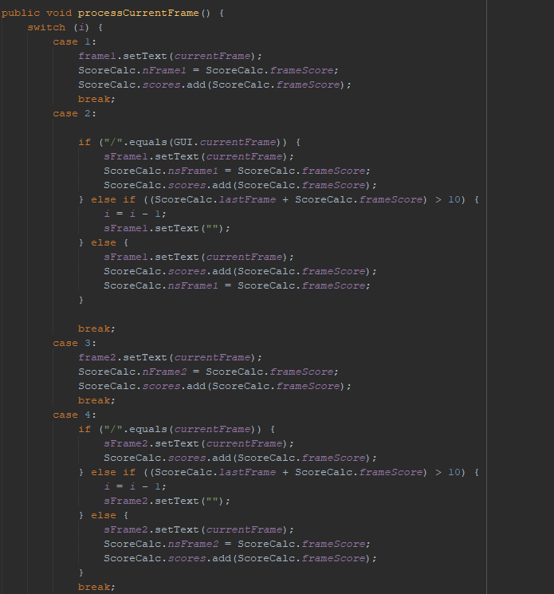

The driver program is super simple and only used to run the program, set the scene size, and call all the GUI components into the scene.
The meat of this program is located in the GUI class. The first thing located in this class are images and ImageViews, that are used to display images for the background of the application, as well as to display the bowling score sheet. Next, a series of Labels and Buttons are declared and initialized to be displayed on the GUI. The buttons are the buttons that the user interacts with to input, save, and rest the scores. The labels include all of the scores that are displayed on the score sheet, as well as the displaying of the statistics of the user. Then, the class contains multiple methods that process the push of all buttons. Most of the buttons serve the same purpose but are only slightly adjusted to a different input. For example, the first method is named “processButton1”. This method tells the program when the 1 button is pressed to increase the int i by 1 (i starts at 0), set the String “currentFrame” = “1”, set the int frameScore = 1, and then calls the method “processCurrentFrame()”, which will be explained later. The String “currentFrame” relates to the displaying of score on the scoresheet, and the int frameScore holds the value to be calculated with the final score (I ended up using an arraylist for the calculations, so i'm sure this part of the code does not matter, but I kept it in, so I will explain it). Essentially, every button serves the same function, but instead of 1, those variables are changed to the number that correlates with the button. However, the method “processButtonX” functions a bit differently. This method does the same thing as processButton1, but it interacts with the int i differently. If i is even when the button is pressed, then i will increase by 1, but i is odd, it will increase i by 2. Then after the score and string are set, the method checks to see if i is odd again. If it is i will increase by 1 to ensure the user is on the correct frame after throwing a strike.
Next, let's talk about the “processCurrentFrame()” method.  This method consists of a switch that checks to see if i is equal to a certain number. This keeps track of the frame that the user is currently on and allows the String “currentFrame” and Int “frameScore” to be placed into new String and Int variables that correspond to the frame. For example is i = 1, then the data from “currentFrame” and “frameScore” will be inputted into the variables that correspond to the first shot of Frame 1. The cases can be separated into two categories, odd to represent the first shot of the frame and even to represent the second shot of that same frame. For example, i = 1 is the first shot of Frame 1 and i = 2 is the second shot of Frame 1. If i is odd then the string for Frame 1 is updated to display the score and then the score is added to the ArrayList “scores” located in a different class that calculates the total score. For the most part evens do the same, with more stipulations, because certain values are impossible for the second shot. So the program is saying if the spare button is hit, read it normally, because a spare is valued at 10 pins, but it just represents knocking down all the pins on the second shot. This case also states that if the value inputted for the second shot is greater than 10-lastshot, then return nothing and set i back 1 so they can re-input the value. The last statement essentially says if the input is acceptable, run it like any other frame. Then, when i has reached 19 or 20, depends on if a strike was thrown in the last frame, call method (processTotalscore() and print out the total score). These are located in the class ScoreCalc. All this method does is hold the scores ArrayList and process the total score by total sum of all the values in the ArrayList.
The "backButton" method just sets the ArrayList back by 1 index and removes the previous value. The saveResetButton clears all of the strings that are currently stored, and then clears the score ArrayList. The last method is the processSavedScores method. This method used a try-catch block to save the scores into a text file, then scan the int located within the file. Then the block loops and calculates the high score and last score. From there the average score is found in the same method. Then the high score, average score, and last score are placed into indexes of the Array named returnValues, that are then used in labels to display the user’s stats.